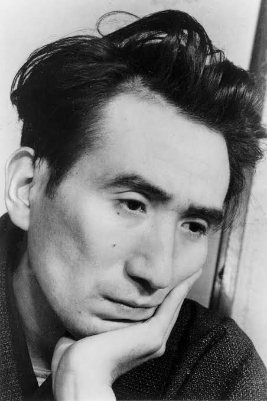

— Quem foi Dazai —

Osamu Dazai (pseudónimo de Shūji Tsushima, 1909–1948) foi um dos nomes mais marcantes da literatura japonesa moderna do século XX. Nascido numa família abastada de proprietários de terras em Aomori, no norte do Japão.
“A artificialidade do seu sorriso desmente a sua boa aparência, indicando a profundidade do seu isolamento e tornando-o desagradável de se olhar.”
— Osamu Dazai, Declínio de um Homem